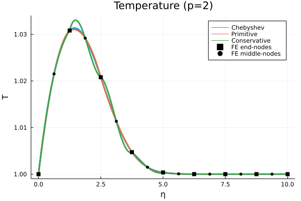
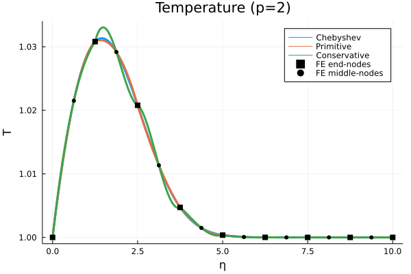

2023-11-27 FE for Compressible flow#
Last time#
Solver diagnostics
Reading profiles
Amortizing costs
Today#
Equations
Conservation
Choice of variables
SUPG stabilization
Solvers
Boundary conditions
using Plots
default(linewidth=3)
using LinearAlgebra
using SparseArrays
Conservation of mass, momentum, and energy#
Equation of state
\begin{aligned} \bm{F}(\bm{q}) &= \underbrace{\begin{pmatrix} \rho\bm{u}\ {\rho \bm{u} \otimes \bm{u}} + P \bm{I}3 \ {(E + P)\bm{u}} \end{pmatrix}}{\bm F_{\text{adv}}} + \underbrace{\begin{pmatrix} 0 \
\bm{\sigma} \
\bm{u} \cdot \bm{\sigma} - k \nabla T \end{pmatrix}}{\bm F{\text{diff}}},\ S(\bm{q}) &=
- (59)#\[\begin{pmatrix} 0\\ \rho g \bm{\hat{k}}\\ 0 \end{pmatrix}\]
\end{aligned}
Choice of variables#
Acoustic wave speed#
material |
speed |
|---|---|
air |
340 m/s |
water |
1500 m/s |
Mach number#
Primitive variables#
Using the equation of state, we can write \(\bm y(\bm q)\) or \(\bm q(\bm y)\). But these transformations are ill conditioned for \(\mathrm{Ma} \ll 1\).
Blasius profile (thanks, Leila Ghaffari)#
Take an analytic Blasius profile.
Primitive: Write \(\bm y\) in a piecewise linear space with nodally exact values.Conservative: Write \(\bm q\) in a piecewise linear space with nodally exact values.
 

Stabilization#
Time integration#
Fully implicit \(G(t, \bm y, \dot{\bm y}) = 0\) with generalized alpha.
Newton method, usually about 3 iterations per time step.
Krylov method
GMRES when using a strong preconditioner
Block Jacobi/incomplete LU
BCGS(\(\ell\)) with a weak preconditioner
Point-block Jacobi
Running on Alpine#
$ ssh login.rc.colorado.edu
rc$ module load slurm/alpine
rc$ acompile
acompile$ . /projects/jeka2967/activate.bash
$ git clone \
https://github.com/CEED/libCEED
$ cd libCEED/examples/fluids
$ make
$ mpiexec -n 1 ./navierstokes \
-options_file FILE.yaml
Running in Docker#
Clone the libCEED repository and cd libCEED/examples/fluids
host$ docker run -it --rm -v $(pwd):/work registry.gitlab.com/micromorph/ratel
$ make
$ mpiexec -n 2 ./navierstokes -options_file FILE.yaml